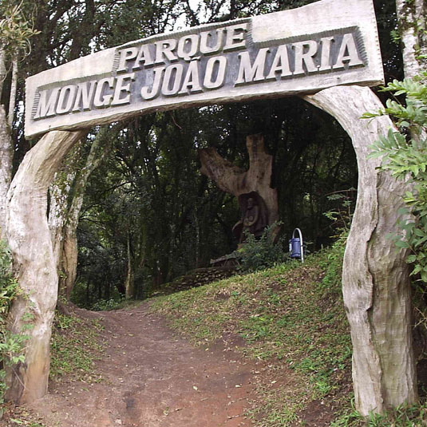

Fé e história
Turismo Religioso
A religiosidade popular está presente na história de Porto União, unindo fé, natureza e memória da Guerra do Contestado em um dos espaços mais simbólicos do município.

Ecoturismo e história
Parque Monge João Maria
Localizado no bairro Santa Rosa, o parque é uma reserva de mata nativa preservada que abriga três grutas naturais de rocha e o famoso Pocinho do João Maria.
O espaço reúne turismo ecológico, religiosidade e elementos da história da Guerra do Contestado.
As paleotocas
Além do aspecto religioso, as grutas possuem importância paleontológica. Estudos indicam que algumas cavidades são paleotocas, associadas à megafauna que habitava a região milhares de anos atrás.
Planeje seu passeio